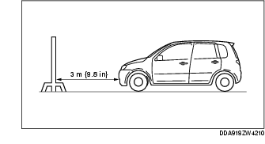
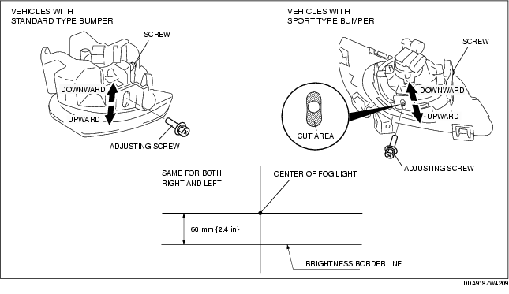

Front fog light aiming
1. Adjust the tire pressure to the specification.
2. Position the unloaded vehicle on a flat, level surface.
3. Seat one person in the driver's seat.
4. Position the vehicle straight ahead and perpendicular to a white screen.

5. Set the fog lights 3 m {9.8 ft} from the white screen.
6. Place an object in front of the fog light not being adjusted to block its light beam.
7. Start the engine so that the battery remains charged.
8. Turn the front fog lights on.
9. Slightly bend back the mudguard.
10. Remove the adjusting screw and cut the front fog light hole cover at the position shown in the figure.
11. Cut the front fog light hole cover at the position shown in the figure. (vehicles with sport type bumper)
12. Loosen the screw, move the front fog light in the direction of the arrows, and adjust the center of the front fog light to the position shown in the figure.
13. Tighten the adjusting screw, then tighten the screw.
